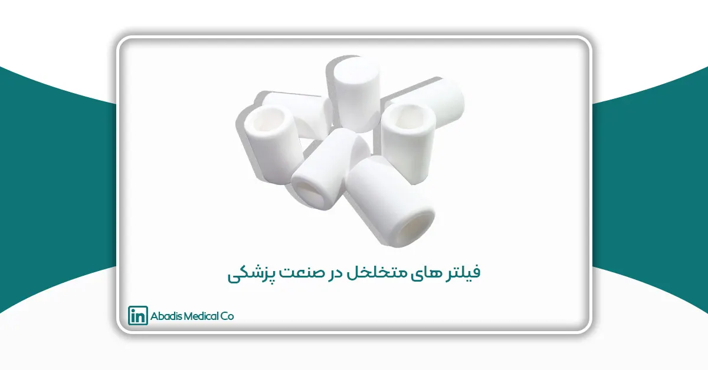
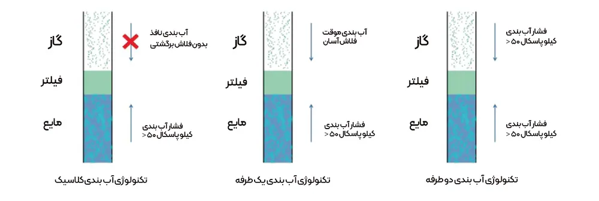
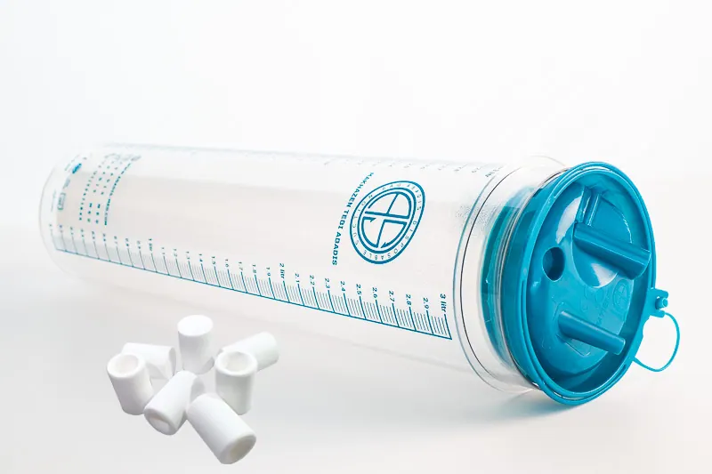

مقدمه
فیلتر های متخلخل یا فیلترهای زینتر شده (Porous Sinter Filter) در طیف وسیعی از صنایع برای جداسازی گازها و مایعات استفاده می شوند؛ برخی از این صنایع عبارتند از: بیوشیمی، داروسازی، نساجی، مراقبتهای بهداشتی و حتی خودروها. این فیلترها به گونهای طراحی شده اند که دارای منافذی با اندازه معین باشند تا ذرات آلوده را فیلتر کرده و بقیه را تخلیه نمایند.
فیلترهای متخلخل یا فیلترهای سینتر شده (Porous Sinter Filter) نوعی فیلتر هستند که از مواد متخلخل ساخته شدهاند. این فیلترها از طریق فرایند تف جوشی یا سینترینگ (sintering) ساخته میشوند که شامل فشردهسازی و گرم کردن پودرهای فلزی یا سرامیکی تا دمایی است که ذرات به هم جوش بخورند، بدون اینکه ذوب شوند.
فیلترهای زینتر شده به دلیل ساختار متخلخلشان، جریان آزاد مایعات یا گازها را امکانپذیر میسازند در حالی که ذرات معلق را به دام میاندازند. این ویژگیها باعث میشود که این نوع فیلترها در کاربردهای مختلفی از جمله فیلتراسیون گازها، فیلتراسیون مایعات، صنایع شیمیایی، پزشکی، خودروسازی و هوافضا استفاده شوند.
مزایای اصلی فیلترهای متخلخل یا فیلترهای سینتر شده (Porous Sinter Filter)
1. دوام و استحکام بالا: به دلیل ساختار محکم و مواد استفاده شده در آنها
2. مقاومت در برابر خوردگی و دماهای بالا: به ویژه اگر از مواد فلزی یا سرامیکی ساخته شده باشند.
3. قابلیت شستشو و استفاده مجدد: این فیلترها میتوانند شسته و تمیز شوند و به طور مکرر استفاده شوند.
4. کارایی فیلتراسیون بالا: توانایی حذف ذرات بسیار ریز از جریانهای مایع یا گازی.
در کل، فیلترهای زینتر شده به دلیل خواص منحصر به فردشان در بسیاری از صنایع و کاربردهای مختلف محبوبیت زیادی دارند.

کاربردهای فیلتر متخلخل
- تجهیزات پزشکی: در علوم پزشکی و زیستی، در دستگاه هایی مانند فیلترهای IV، ونتیلاتورها و جلوگیری از آلودگی استفاده می شود.
- حفاظت از محیط زیست: از این فیلترها در سیستم های تصفیه آب و هوا برای حذف ناخالصی ها، باکتری ها و ذرات استفاده می شود.
- صنایع شیمیایی و پتروشیمی: فیلترهای پلاستیکی متخلخل برای جداسازی جامدات از مایعات و گازها در فرآیندهای شیمیایی مختلف استفاده میشوند.
- سازگاری شیمیایی: انتخاب مواد پلیمری برای فیلترهای پلاستیکی متخلخل بسیار مهم است، زیرا باید از نظر شیمیایی با موادی که با آن مواجه می شود سازگار باشد. پلیمرهای مختلف سطوح مختلفی از مقاومت را در برابر اسیدها، بازها، حلالها و سایر مواد شیمیایی ارائه میدهند که استفاده از این فیلترها را در محیطهای مختلف ممکن میسازد.
- صنایع غذایی و آشامیدنی: آنها به فیلتر کردن نوشیدنی ها، روغن ها و سایر محصولات مصرفی برای بهبود کیفیت محصول کمک می کنند.
- هوافضا و خودرو: فیلترهای پلاستیکی متخلخل در سیستم های سوخت و هیدرولیک برای جلوگیری از آلودگی و حفظ یکپارچگی سیستم استفاده می شوند.
- تحمل دما و فشار: فیلترهای متخلخل به گونه ای طراحی شده اند که بسته به کاربرد، در برابر طیف وسیعی از دما و فشار مقاومت کنند. آنها می توانند در محیط های کم و دمای بالا به طور موثر عمل کنند و آنها را در صنایع مختلف همه کاره کند.
فیلتر های متخلخل در تجهیزات پزشکی
- ماسکها و دستگاههای تنفسی: فیلترهای پلاستیکی متخلخل در ماسکهای پزشکی و دستگاههای تنفسی برای تصفیه هوا و جلوگیری از عبور ذرات معلق و عوامل بیماریزا استفاده میشوند.
- تجهیزات تزریق و دیالیز: در سیستمهای تزریق و دیالیز، فیلترهای متخلخل برای تصفیه مایعات و جلوگیری از ورود ذرات ناخواسته به بدن بیمار استفاده میشوند.
- دستگاههای فیلتراسیون خون: در دستگاههای فیلتراسیون خون، این فیلترها برای جدا کردن ذرات معلق و جلوگیری از ورود عوامل عفونی به جریان خون بیمار استفاده میشوند.
- تهویه و سیستمهای کنترل عفونت: فیلترهای متخلخل آبادیس در سیستمهای تهویه بیمارستانی و اتاقهای عمل برای تصفیه هوا و کاهش خطر انتشار عفونتهای هوابرد به کار میروند.
فیلتر های متخلخل در ساکشن پزشکی
فیلترهای متخلخل یا فیلترهای زینتر شده (Porous Sinter Filter) پلاستیکی آبادیس به عنوان یکی از اجزای مهم و حیاتی در تجهیزات پزشکی، نقش مهمی را در تضمین بهداشت، ایمنی و کارایی این تجهیزات ایفا میکنند. این فیلترها برای تصفیه و کنترل جریان مایعات و گازها در کاربردهای مختلف پزشکی استفاده میشوند.
در این مقاله، به بررسی مواد مورد استفاده در ساخت این فیلترها، کاربردهای آنها و مزایای استفاده از آنها در تجهیزات پزشکی میپردازیم.
جنس
فیلتر های متخلخل در صنعت پزشکی با توجه به کاربردهایشان می توانند از جنس های زیر باشند:
- پلی اتیلن با وزن مولکولی فوق العاده بالا (UHMWPE)
- پلی اتیلن (PE)
- پلی پروپیلن (PP)
فیلتر های متخلخل پلاستیکی از جنس پلی اتیلن با وزن مولکولی فوق العاده بالا (UHMW-PE) یک ماده پلیمری با وزن مولکولی > 1,500,000 Da است.
UHMW-PE در برابر ضربه مکانیکی، سایش و دمای پایین مقاومت بسیار بالایی را دارد.
کاربرد فیلترهای متخلخل در ساکشن پزشکی
کیسهها و مخازن ساکشن یکبار مصرف آبادیس به طور گسترده در سیستمهای جمع آوری مایعات ساکشن شده بیمارستانها مورد استفاده قرار می گیرند.
فیلترهای متخلخل یا فیلترهای زینتر شده (Porous Sinter Filter)، جریان هوا بالا و راندمان فیلتراسیون باکتریایی بالا (BFE) را برای سیستم های خلاء مرکزی بیمارستان فراهم می نمایند و سبب می شوند هوا آزادانه تخلیه گردد تا مایعات ساکشن شده در کیسه ها و باتل های ساکشن جمعآوری شود. فیلترهای متخلخل آبادیس پس از تماس با مایعات عفونی، فوراً آب بندی می شوند و از انتشار مایع عفونی به خطوط وکیوم مرکزی بیمارستان جلوگیری می نماید.

نحوه عمل فیلتر های متخلخل پلاستیکی
فیلترهای متخلخل آبادیس با تعبیه یک پلیمر متورم آب در ساختار متخلخل فیلترهای پلی اتیلن متخلخل ساخته می شوند.
در شرایط خشک، پلیمر اشباع شده منقبض میشود و مسیرهای هوا در ساختار پلی اتیلن متخلخل باز هستند و نفوذپذیری هوا را حفظ میکنند. پس از تماس با محلول آبی، فیلتر متخلخل در مدت زمان کوتاهی متورم می شود و ساختار پلی اتیلن متخلخل را پر می کند که منجر به مسدود شدن مسیرهای هوا می شود و از جریان یافتن مایعات در فیلتر جلوگیری می نماید.
نحوه تولید فیلترهای متخلخل
فیلترهای متخلخل آبادیس با روش تف جوشی یا زینترینگ (Sintering) حرارت و فشار مواد پودری در دمای کمتر از نقطه ذوب آن ساخته می شوند. این روش ویژه به مواد دارای مقاومت شیمیایی خوب و مقاومت در برابر خوردگی عالی می باشد.فیلتر PE متخلخل دارای ساختار مولکولی خطی تکرارشونده CH2-CH2، ساختار بی اثر، پیوندهای مولکولی قوی و مقاومت شیمیایی پایدار است. با خواص فیزیکی مناسب، وزن سبک، ترموپلاستیسیته مناسب و اندازه منافذ وسیع از 15 تا 200 میکرومتر مشخص می شود که می تواند به طور گسترده در آزمایشگاه برای فیلتراسیون/جداسازی مایع جامد، دستگاه های پزشکی و دستگاه های دارورسانی، صنایع خودروسازی و آب استفاده شود.
مزایای استفاده از فیلترهای متخلخل در صنعت تجهیزات پزشکی
- بهبود کیفیت و ایمنی: فیلترهای متخلخل پلاستیکی با جلوگیری از عبور ذرات معلق، باکتریها و ویروسها، به بهبود کیفیت و ایمنی فرآیندهای پزشکی کمک میکنند.
- پایداری شیمیایی و مکانیکی: این فیلترها به دلیل پایداری در برابر مواد شیمیایی و مقاومت مکانیکی بالا، برای استفاده در شرایط مختلف پزشکی مناسب هستند.
- سبک و انعطافپذیر: فیلترهای پلاستیکی متخلخل به دلیل وزن سبک و انعطافپذیری، به راحتی در انواع تجهیزات پزشکی قابل استفاده هستند.
- هزینه کم و قابلیت تولید انبوه: مواد پلاستیکی به دلیل هزینه کمتر و قابلیت تولید انبوه، انتخاب مناسبی برای تولید فیلترهای متخلخل در مقیاس وسیع هستند.
نتیجه گیری
در نتیجه، فیلترهای پلاستیکی متخلخل، راه حل های فیلتراسیون همه کاره و بسیار قابل تنظیم هستند که در صنایع متعدد برای حفظ کیفیت محصول، محافظت از تجهیزات و اطمینان از خلوص مایعات یا گازها استفاده می شوند. توانایی آنها در کنترل دقیق اندازه منافذ و مقاومت شیمیایی و دما آنها را به ابزارهای ارزشمندی در طیف گسترده ای از کاربردهای فیلتراسیون تبدیل می کند.
فیلترهای متخلخل پلاستیکی آبادیس به عنوان یکی از اجزای کلیدی در تجهیزات پزشکی، نقش مهمی در تضمین بهداشت و ایمنی در فرآیندهای مختلف پزشکی ایفا میکنند. انتخاب مواد مناسب و طراحی بهینه این فیلترها میتواند به بهبود کیفیت و کارایی تجهیزات پزشکی و در نهایت سلامت بیماران کمک شایانی نماید. با توجه به پیشرفتهای فناوری در زمینه مواد پلاستیکی، انتظار میرود که در آینده، کاربردهای جدید و بهبود یافتهای برای این فیلترها در تجهیزات پزشکی معرفی شود.